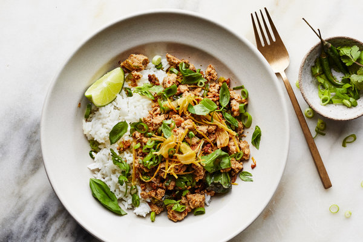

Spicy Turkey Stir-Fry With Crisp Garlic and Ginger |
|
YIELD - 4 servings TIME - 40 minutes This dish does not shy away from fat in the best way possible. From the lamb to the olive oil to the yogurt used as a sauce at the end, this is a one-skillet meal that feels worthy of a weekend spread. Since these meatballs aren’t made with binders like eggs or bread, they’re truly best made with a fatty meat like lamb. If you decide to use pork or beef instead, make sure it’s a mixture with a higher fat content or the meatballs could turn out dry. Since eggplant can really soak up oil when pan-frying, feel free to add more to the skillet as the slices cook. |
 |
|
Step 1
In a cold 12-inch skillet, combine oil, garlic and ginger. Place over medium heat until sizzling, then continue to cook, stirring frequently, until garlic and ginger are golden brown, 5 to 7 minutes. Transfer with a slotted spoon to a paper towel-lined plate and sprinkle lightly with salt. Step 2
Add coconut oil to pan, then stir in scallion whites and cook until starting to brown, about 2 minutes. Stir in red-pepper flakes and cook for 1 minute. Step 3
Stir in turkey, raise heat to medium-high, and cook, breaking up meat with a spoon, until golden and crisp, about 7 minutes. Don’t stir the meat too much, so it can turn deep brown. Step 4
Remove pan from heat and stir in lime juice, fish sauce and soy sauce. Taste and add more lime juice, red-pepper flakes, soy sauce and sugar or honey if you like. Step 5
Gently mix about two-thirds of the fried garlic and ginger into the turkey. Serve turkey over rice, topped with cilantro, basil, scallion greens and fresh chile, and garnished with remaining fried ginger and garlic. |
|